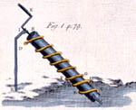

ARCHIMEDES
ARCHIMEDES
Principle of levers: Although Archimedes did not invent the lever, he discovered the reasoning behind why it worked. It is said that he remarked, "Give me a place to stand on, and I will move the Earth." Plutarch explained how Archimedes designed the block and tackle pulley systems, allowing sailors to use the principle of leverage to lift objects that would otherwise have been too heavy to shift. It is also said that Archimedes built the Syracusia ship, which was the largest vessel of its time and capable of transporting 600 passengers. Since a ship of this size would leak a considerable amount of water through the hull, the Archimedes' screw was purportedly developed in order to remove the bilge water. The screw was a machine with a revolving screw shaped blade inside a cylinder. It was turned by hand, and could also be used to transfer water from a low-lying body of water into irrigation canals.
Archimedes' claw: Archimedes' claw was invented to defend the city of Syracuse. Known as the 'ship-shaker', it is shaped like a crane arm, from which a large metal hook was balanced. When the claw was dropped on an attacking ship, it would lift the ship by swinging the arm upwards and then sink the ship.

Death Ray: There have been many doubts about Archimedes weapon of the death Ray. However in 2005 the Death Ray was proved and tested by a University class (MIT). Using over one hundred mirrors,they made a dummy profile of a ship with 5 inch thick wood which ignited after focusing all the mirrors to a specific point on the ship. This experiment was then carried out again on a real boat in the water with the help of the 'mythbusters', thus proving Archimedes death ray as no longer a theory but a definite possibility that this 'death ray' tactic was used against the roman ships in Syracuse.

Archimedes' screw: One story recounts how a perplexed King Hiero was unable to empty rainwater from the hull of one of his ships. The King called upon Archimedes for assistance. Archimedes' solution was to create a machine consisting of a hollow tube containing a spiral that could be turned by a handle at one end. When the lower end of the tube was placed into the hull and the handle turned, water was carried up the tube and out of the boat. The Archimedes Screw is still used as a method of irrigation in developing countries.